Introduction
Casino aims to migrate semi-automatically the front-end of applications regardless of its implementing language. The front-end corresponds to the widgets and their behaviors.
Migration Strategy
Here is a diagram showing the migration steps implemented by Casino.
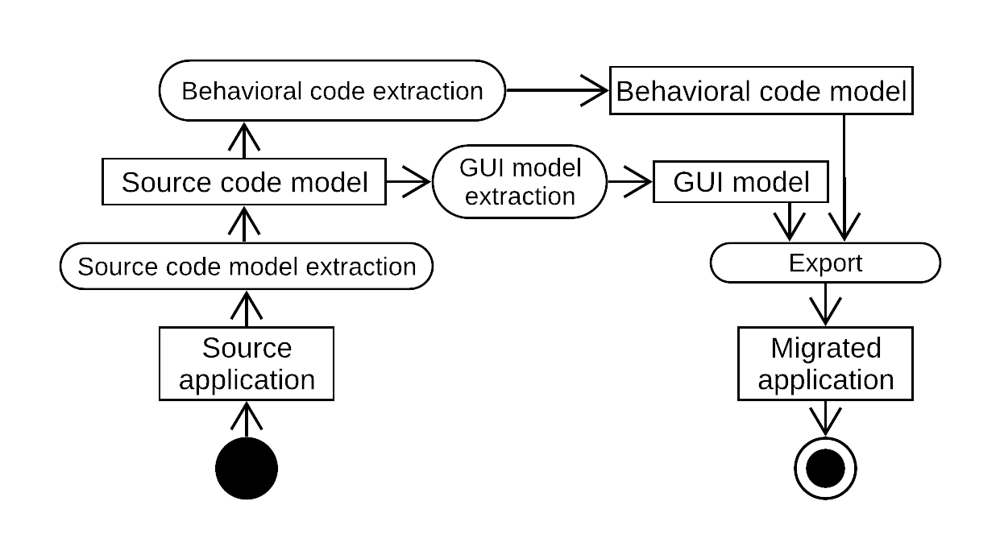
GUI Meta-model
Full Widgets meta-model

Current results
GWT application migration to Angular
| Source Application (GWT) | Target Application (Angular) |
|---|---|
 |
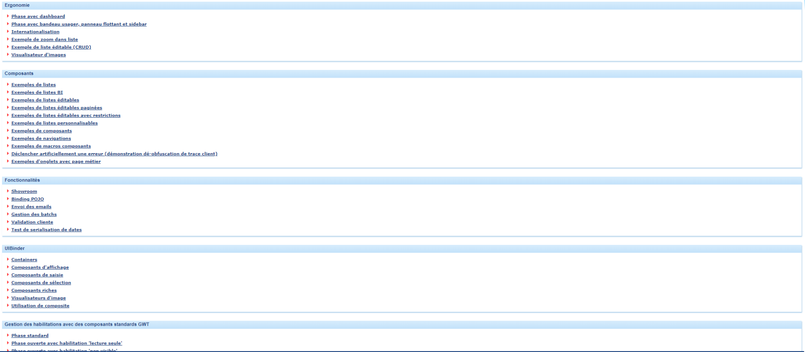 |
 |
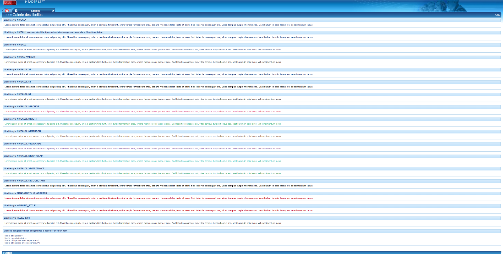 |
| 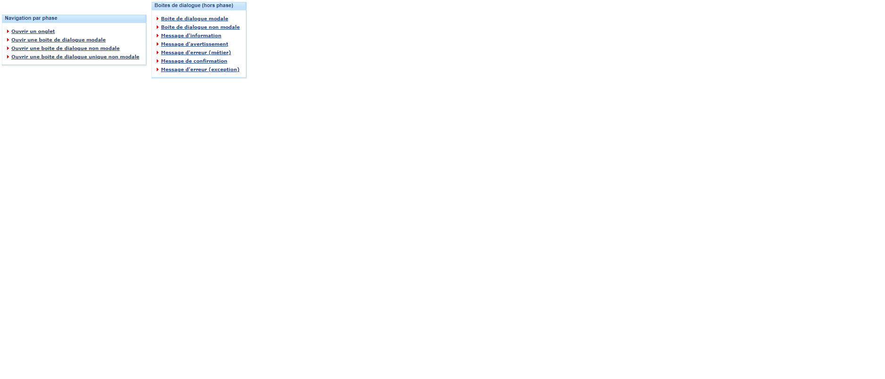 | 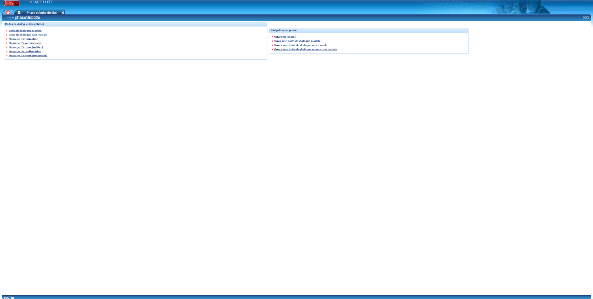 |
| 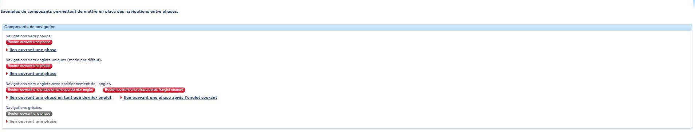 | 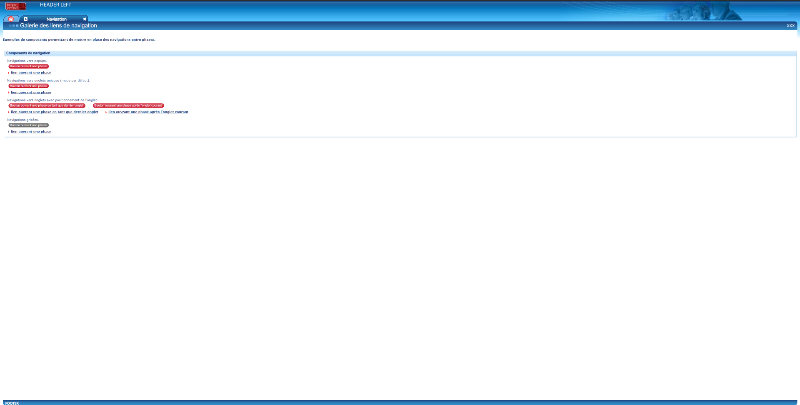 |
 |
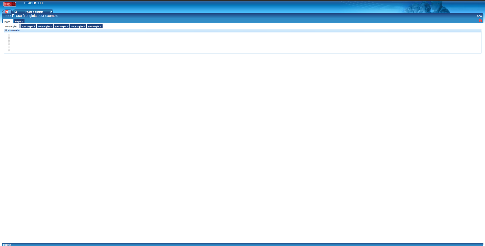 |
 |
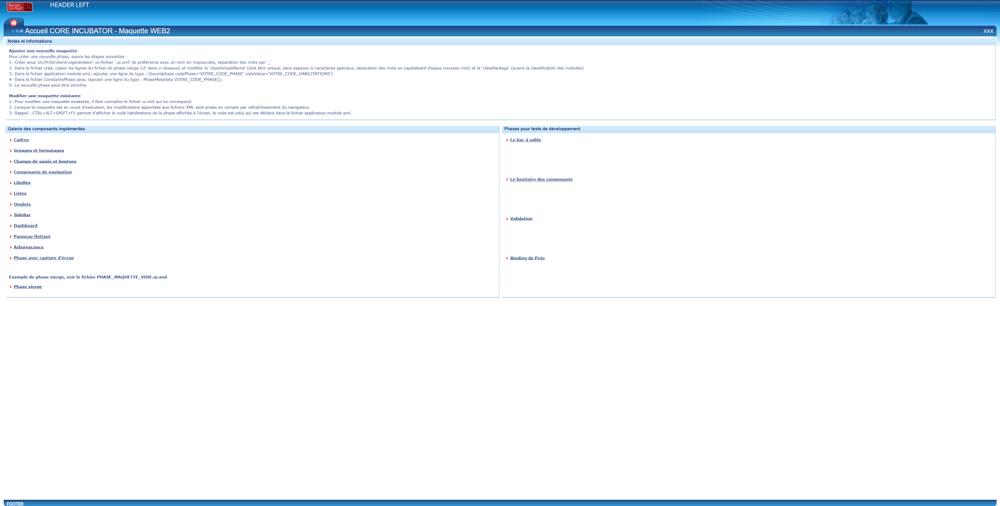 |
GWT to Seaside
Here are some other examples of the results obtained for GWT application migration to Seaside (Traccar):
| Source Application (GXT) | Target Application (Seaside) |
|---|---|
| 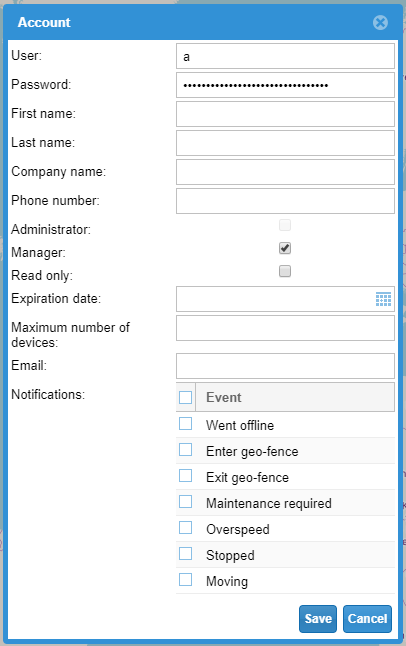 | 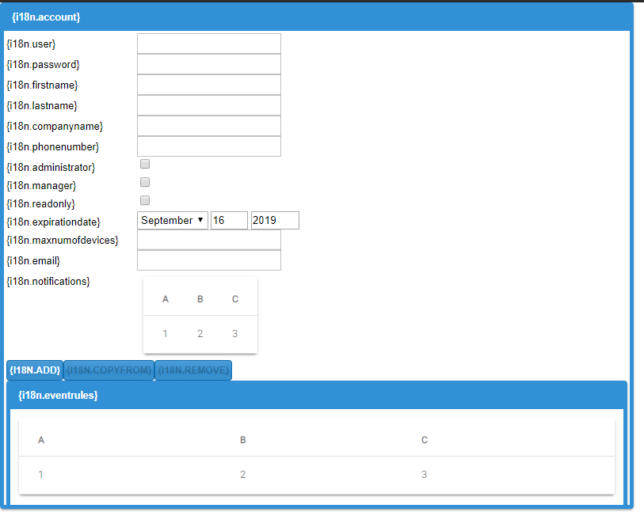 |
| 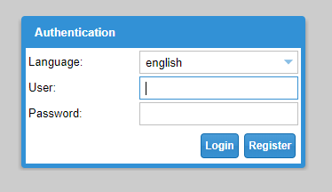 | 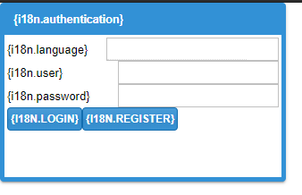 |
| 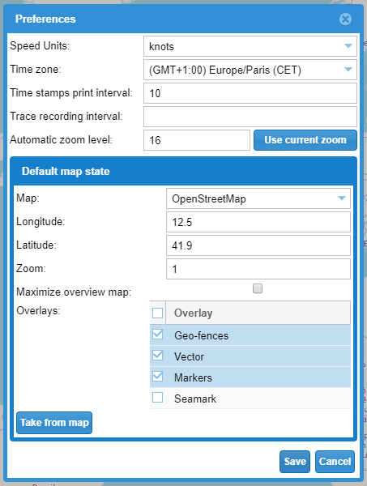 | 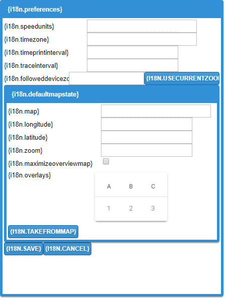 |
Spec to Spec2
| Source Application (Spec) | Target Application (Spec2) |
|---|---|
Links
The core of the project (with the importer GWT and the exporter Angular) is available on GitHub. There are also:
| Importer | Exporter |
|---|---|
| Swing | Spec |
| Spec | Spec2 |
| HTML | Seaside |
| GWT/GXT | Aurelia |
| Silverlight |
Some importers or exporters are still in beta version.
However, you can help us! 
To use Casino, we must use a Moose 8 image.
Publications
Journal Articles
-
With the generalization of mobile devices and Web applications, GUI frameworks evolve at a fast pace: JavaFX replaced Swing, Angular 8 replaced Angular 1.4 which had replaced Google Web Toolkit (GWT). This situation forces organizations to migrate their applications to modern frameworks regularly so they do not become obsolete. There has been research in the past on automatic GUI migration. However, and concurrently, large organisations’ applications use many different technologies. For example, the IT company with which we are working, Berger-Levrault, wishes to migrate applications written in generic programming language (Java/GWT), proprietary "4th generation" languages (VisualBasic 6, PowerBuilder), or markup languages (Silverlight). Furthermore, one must expect that in a few years time, new frameworks will appear and new migrations will be required. Thus, there is a need for a language-agnostic migration approach allowing one to migrate various legacy GUI to the latest technologies. None of the existing solutions allow to deal with such a variety of GUI framework. They also typically focus on a subpart of the migration (i.e. how to extract a specific GUI framework) ignoring the re-engineering/forward-engineering part of the migration (which is straightforward for a single technology). This makes it difficult to adapt these solutions to other GUI frameworks. We propose an approach to migrate the GUI part of applications. It is based on meta-models to represent the visual element structure and layout. We detail how to create both the GUI extractors and generators, with guidelines to support new markup and programming languages. We evaluate our approach by implementing three extractors and generators for web-based or desktop-based user interfaces defined with generic programming languages (Java, Pharo, TypeScript) or markup languages (XML, HTML). We comment case studies on five applications, opened and closed source, of different sizes. The implementations of our generic approach detect 99% of the widgets and identify (i.e. determine the type of the widget) 97% of them. We give examples of the migrated GUIs, both successful and not.
-
Berger-Levrault is an international company that developed applications in GWT for more than 10 years. However, GWT is no longer actively maintained, with only one major update since 2015. To avoid being stuck with legacy technology, the company decided to migrate its applications to Angular. However, because of the size of the applications (more than 500 web pages per application), rewriting from scratch is not desirable. To ease the migration, we designed a semi-automated migration approach that helps developers migrate applications’ front-end from GWT to Angular and a tool that performs the migration. In this paper, we present our approach and tool. We validated the approach on concrete application migration and compared its benefits to redeveloping the application manually. We report that the semi-automated migration offers an effort reduction over a manual migration. Finally, we present recommendations for future migration projects.
Conference Articles
-
In a collaboration with Berger-Levrault, a major IT company, we are working on the migration of GWT applications to Angular. We focus on the GUI aspect of this migration which requires a framework switch (GWT to Angular) and a programming language switch (Java to TypeScript). Previous work identified that the GUI can be split into the UI structure and the GUI behavioral code. GUI behavioral code is the code executed when the user interacts with the UI. Although the migration of UI structure has already been studied, the migration of the GUI behavioral code has not. To help developers during the migration of their applications, we propose a generic approach in four steps that uses a meta-model to represent the GUI behavioral code. This approach includes a separation of the GUI behavioral code into events (caller code) and the code executed when an event is fired (called code). We present the approach and its implementation for a real industrial case study. The application comprises 470 Java (GWT) classes representing 56 web pages. We give examples of the migrated code. We evaluate the quality of the generated code with standard tools (SonarQube, codelizer) and compare it to another Java to TypeScript converter. The results show that our code has 53% fewer warnings and rule violations for SonarQube, and 99% fewer for codelizer.
-
Companies are migrating their software systems. The migration process contemplates many steps, UI migration is one of them. To validate the UI migration, most existing approaches rely on visual structure (DOM) comparison. However, in previous work, we experimented such validation and reported that it is not sufficient to ensure a result that is equivalent or even identical to the visual structure of the interface to be migrated. Indeed, two similar DOM may be rendered completely differently. So, we decide to focus on the layout migration validation. We propose a first visual comparison approach for migrated layout validation and experiment it on an industrial case. Hence, from this first experiment and already existing studies on image comparison field, we highlight challenges for layout comparison. For each challenge, we propose possible solutions, and we detail the three main features we need to create a good layout validation approach.
-
Developers used frameworks to create their User Interface. Those frameworks are developed in a specific version of a language and can be used until the retro-compatibility is broken. In such case, developers need to migrate their software systems to a new GUI framework. We proposed a three-step approach to migrate the front-end of an application. This approach includes an importer, a GUI meta-model and an exporter. We validate our experiment on 6 projects in Pharo. We are able to migrate 5 out of 6 projects that all conserve their widgets organization.
-
In the context of a collaboration with Berger-Levrault, a major IT company, we are working on the migration of a GWT application to Angular. We focus on the GUI aspect of this migration which, even if both are web frameworks, is made difficult because they use different programming languages (Java for one, Typescript for the other) and different organization schemas (e.g. different XML files). Moreover, the new application must mimic closely the visual aspect of the old one so that the users of the application are not disturbed. We propose an approach in three steps that uses a meta-model to represent the GUI at a high abstraction level. We evaluated this approach on an application comprising 470 Java (GWT) classes representing 56 screens. We are able to model all the web pages of the application and 93% of the widgets they contain, and we successfully migrated (i.e., the result is visually equal to the original) 26 out of 39 pages (66%). We give examples of the migrated pages, both successful and not.
-
During the evolution of an application, it happens that developers must change the programming language. In the context of a collaboration with Berger-Levrault, a major IT company, we are working on the migration of a GWT application to Angular. We focus on the GUI aspect of this migration which, even if both frameworks are web Graphical User Interface (GUI) frameworks, is made difficult because they use different programming languages and different organization schema. Such migration is complicated by the fact that the new application must be able to mimic closely the visual aspect of the old one so that the users of the application are not disrupted. We propose an approach in four steps that uses a meta-model to represent the GUI at a high abstraction level. We evaluated this approach on an application comprising 470 Java (GWT) classes representing 56 pages. We are able to model all the web pages of the application and 93% of the widgets they contain, and we successfully migrated 26 out of 39 pages (66%). We give examples of the migrated pages, both successful and not.
-